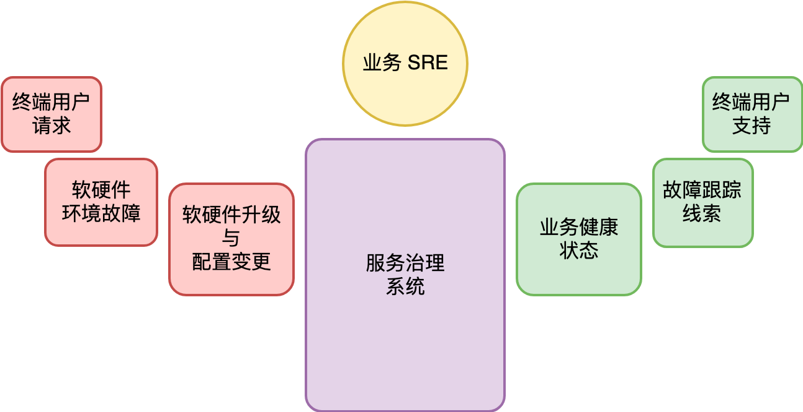

- 00 开篇词 怎样成长为优秀的软件架构师？.md
- 01 架构设计的宏观视角.md
- 02 大厦基石：无生有，有生万物.md
- 03 汇编：编程语言的诞生.md
- 04 编程语言的进化.md
- 05 思考题解读：如何实现可自我迭代的计算机？.md
- 06 操作系统进场.md
- 07 软件运行机制及内存管理.md
- 08 操作系统内核与编程接口.md
- 09 外存管理与文件系统.md
- 10 输入和输出设备：交互的演进.md
- 11 多任务：进程、线程与协程.md
- 12 进程内协同：同步、互斥与通讯.md
- 13 进程间的同步互斥、资源共享与通讯.md
- 14 IP 网络：连接世界的桥梁.md
- 15 可编程的互联网世界.md
- 16 安全管理：数字世界的守护.md
- 17 架构：需求分析 (上).md
- 18 架构：需求分析 (下) · 实战案例.md
- 19 基础平台篇：回顾与总结.md
- 20 桌面开发的宏观视角.md
- 21 图形界面程序的框架.md
- 22 桌面程序的架构建议.md
- 23 Web开发：浏览器、小程序与PWA.md
- 24 跨平台与 Web 开发的建议.md
- 25 桌面开发的未来.md
- 26 实战（一）：怎么设计一个“画图”程序？.md
- 27 实战（二）：怎么设计一个“画图”程序？.md
- 28 实战（三）：怎么设计一个“画图”程序？.md
- 29 实战（四）：怎么设计一个“画图”程序？.md
- 30 实战（五）：怎么设计一个“画图”程序？.md
- 31 辅助界面元素的架构设计.md
- 32 架构：系统的概要设计.md
- 33 桌面开发篇：回顾与总结.md
- 34 服务端开发的宏观视角.md
- 35 流量调度与负载均衡.md
- 36 业务状态与存储中间件.md
- 37 键值存储与数据库.md
- 38 文件系统与对象存储.md
- 39 存储与缓存.md
- 40 服务端的业务架构建议.md
- 41 实战（一）：“画图”程序后端实战.md
- 42 实战（二）：“画图”程序后端实战.md
- 43 实战（三）：“画图”程序后端实战.md
- 44 实战（四）：“画图”程序后端实战.md
- 45 架构：怎么做详细设计？.md
- 46 服务端开发篇：回顾与总结.md
- 47 服务治理的宏观视角.md
- 48 事务与工程：什么是工程师思维？.md
- 49 发布、升级与版本管理.md
- 50 日志、监控与报警.md
- 51 故障域与故障预案.md
- 52 故障排查与根因分析.md
- 53 过载保护与容量规划.md
- 54 业务的可支持性与持续运营.md
- 55 云计算、容器革命与服务端的未来.md
- 56 服务治理篇：回顾与总结.md
- 57 心性：架构师的修炼之道.md
- 58 如何判断架构设计的优劣？.md
- 59 少谈点框架，多谈点业务.md
- 60 架构分解：边界，不断重新审视边界.md
- 61 全局性功能的架构设计.md
- 62 重新认识开闭原则 (OCP).md
- 63 接口设计的准则.md
- 64 不断完善的架构范式.md
- 65 架构范式：文本处理.md
- 66 架构老化与重构.md
- 67 架构思维篇：回顾与总结.md
- 68 软件工程的宏观视角.md
- 69 团队的共识管理.md
- 70 怎么写设计文档？.md
- 71 如何阅读别人的代码？.md
- 72 发布单元与版本管理.md
- 73 软件质量管理：单元测试、持续构建与发布.md
- 74 开源、云服务与外包管理.md
- 75 软件版本迭代的规划.md
- 76 软件工程的未来.md
- 77 软件工程篇：回顾与总结.md
- 加餐 如何做HTTP服务的测试？.md
- 加餐 实战：“画图程序” 的整体架构.md
- 加餐 怎么保障发布的效率与质量？.md
- 热点观察 我看Facebook发币（上）：区块链、比特币与Libra币.md
- 热点观察 我看Facebook发币（下）：深入浅出理解 Libra 币.md
- 用户故事 站在更高的视角看架构.md
- 答疑解惑 想当架构师，我需要成为“全才”吗？.md
- 结束语 放下技术人的身段，用极限思维提升架构能力.md
- 课外阅读 从《孙子兵法》看底层的自然法则.md
55 云计算、容器革命与服务端的未来
你好，我是七牛云许式伟。
到今天这一讲，我们服务治理相关的话题基本上接近尾声。通过前面的内容我们可以知道，服务治理比软件治理要复杂很多。它的涉及面非常广，需要有系统性的、结构化的解决方案，需要基础架构、中间件、SRE 工作平台等多个层次、多个工种之间的紧密配合。
软件的服务化过程本身是互联网的胜利。从最初以泛娱乐场景为主，到今天影响国民经济的方方面面，场景越来越严肃和多样化。
软件服务化使得工程师有了新的职能：on call。软件工程师并不是把软件开发出来就完了，还需要保证软件上线后的服务品质，比如稳定性。在线上出问题的时候，软件工程师还需要随时响应线上的 on call 请求，参与到故障排查的过程中去。
但是提供靠谱的服务是如此之难，尤其在软件并不是自己团队开发的情况下，保证服务质量的过程增加了许多不可控的因素。
云计算的诞生，是一次软件交付方式边界上的重新定义。在此之前，IT 技术供应商通常的交付物是可执行程序或源代码。这种交付方式更多的是软件功能的交付，但是并不参与到软件线上的运行状况的管理。
云计算定义了全新的交付方式，IT 技术供应商不再提供可执行程序或源代码，而是互联网服务。用户使用 IT 服务时并不需要了解背后运转机制。即使在线上出问题的时候，也是 IT 技术服务商安排技术人员去解决，而不是用户自己去想办法解决。
这意味着云计算改变了用户与 IT 技术服务商之间的配合方式。从之前的对交付过程负责，到对服务的质量结果负责，双方的职责更为简单清晰。
云计算发展到今天，大体经历了两个阶段。
资源交付革命
第一个阶段，是资源交付的云化。它的变革点在于 IT 资源交付的效率。
在云计算之前，业务上线过程大体上来说是这样的：
- 首先，购买基础的 IT 资源，比如服务器和交换机等；
- 然后，将服务器和交换机等通过物流系统运送到 IDC 机房并上架；
- 安装上基础的操作系统；
- 部署业务系统。
而云计算之后的业务上线被简化为：
- 购买云上虚拟的云主机若干台，这些云主机已经按用户选择预装了基础的操作系统；
- 部署业务系统。
这个阶段交付的 IT 产品形态并没有发生根本性的变化，以前是物理机，现在是云主机，两者使用上的用户体验并没有很大的差异性。但这里面 IT 资源交付效率发生了巨大的变化，它主要体现在以下几个方面。
- 资金优化：消除了物流的成本。
- 时间优化：物流时间、产品自助化水平（上架、操作系统安装）。
- 资源复用率提升：云计算通过将不同用户的 IT 资源聚集在一起，提升了 IT 资源的使用效率，减少了社会资源的浪费。
容器革命
云计算的第二个阶段，以容器革命为标志，以 Kubernetes 为事实标准，迭代的是服务治理的能力。
前面我们在 “[47 | 服务治理的宏观视角]” 提到过以下服务治理系统的模型：

服务治理系统的影响因素非常复杂。我们大体将各类影响因素分为以下几种类型。
- 软硬件升级与各类配置变更，即发布。
- 软硬件环境的故障。
- 终端用户的请求。比较典型的场景是秒杀类，短时间内大量的用户涌入，导致系统的承载能力超过规划，产生服务的过载。当然还有一些场景，比如有针对性的恶意攻击、特定类型的用户请求导致的服务端资源大量消耗等，都可能引发服务故障。
即使是在今天，在容器技术大范围应用之前，我们大部分公司的服务治理系统都建立在物理机或云主机的基础上。这种做法的问题在于系统的复杂性过高，不同的影响因素交织在一起，让彻底解决问题变得非常困难。
我们举配置变更作为例子。通常来说，配置变更是我们主动对系统进行软硬件升级或配置参数调整导致的，它应该被认为属于计划性的活动。
变更是故障之源。
只有计划性的配置变更才会按发布计划和检查清单有序地执行。但是，显然各类软硬件环境的故障是非预期的，不知道什么时候会来一下。但是如果我们基于物理机来做服务治理，必然需要面临因为不可预期的软硬件故障而进行配置变更。
这种为了恢复故障的变更有更大的临时性，自然也更难形成高质量的检查清单来检查配置变更的靠谱度。如果线上已经通过流量调度进行了必要的恢复那倒是还好，最多是对这样的临时变更做更多的人工检查来确保质量。
如果某种配置变更方式经常被用于某种故障恢复的场景，那么这样的配置变更就很可能被脚本化下来，以便让故障恢复过程更加高效。
这样随着时间的日积月累，我们就得到了基于物理机的服务治理系统。
但是，这种服务治理系统虽然做到了很高的自动化，但是它并不能算是一个高度自治的系统。
高度自治的服务治理系统对软硬件环境的故障有天然的免疫：我们什么都不用做，系统自己完成自我修复过程。
这就是容器革命带来的变化。
今天 Kubernetes 基本已经成为 DCOS（数据中心操作系统）的事实标准。它带来了以下重要的改变。
- 用户操作的对象不再有机器这玩意，最核心的概念是服务。当然这是称之为数据中心操作系统概念的由来。
- 硬件资源池化。软件或服务与硬件环境解绑，可以轻松从一台物理机迁移到另一台物理机。
- 面向逻辑视图描述集群状态。配置中心的数据只体现业务系统的逻辑，不体现物理特性。
当然，今天容器革命仍然还在如火如荼地进行，完整的演进过程会很漫长。这背后的原因在于，容器技术虽然先进，但它从根本上改变了我们使用计算力的习惯。
服务端的未来
未来服务端技术的演进会走向何方？
服务治理系统的迭代，最终将让我们达到这样的状态。
- 任何业务都可以轻松达到 7x24 小时不间断服务。高并发？高可用？高可靠？小菜一碟。
- 做业务都足够的傻瓜化。服务端工程师？不存在的，我们要的只是 SQL 工程师。
- 做一个新的有状态的存储中间件虽然比做业务麻烦一点，但是，一方面也没有多少新的存储中间件需要做的，另一方面做一个存储中间件有足够便捷的辅助设施，也不会比今天做一个内存中的哈希表难多少。
所以在我看来，服务端工程师很有可能只是一个阶段性的历史背景下的产物。随着互联网应用开发的基础设施越来越完善，服务端开发的成本越来越低，最终和前端工程师重新合而为一。
是的，我说的是重新回到软件时期的样子。那时候，并不存在前端和后端工程师之分。
结语
今天我们聊的话题是服务端的未来。云计算和容器革命将服务端的基础设施化推向了高潮。未来，也许我们并不需要专门的服务端开发工程师来做业务开发。
如果你对今天的内容有什么思考与解读，欢迎给我留言，我们一起讨论。下一讲我们将对 “服务治理篇” 这一章的内容进行回顾与总结。
如果你觉得有所收获，也欢迎把文章分享给你的朋友。感谢你的收听，我们下期再见。
© 2019 - 2023 Liangliang Lee. Powered by gin and hexo-theme-book.